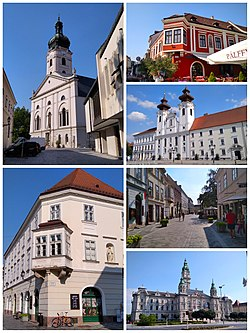
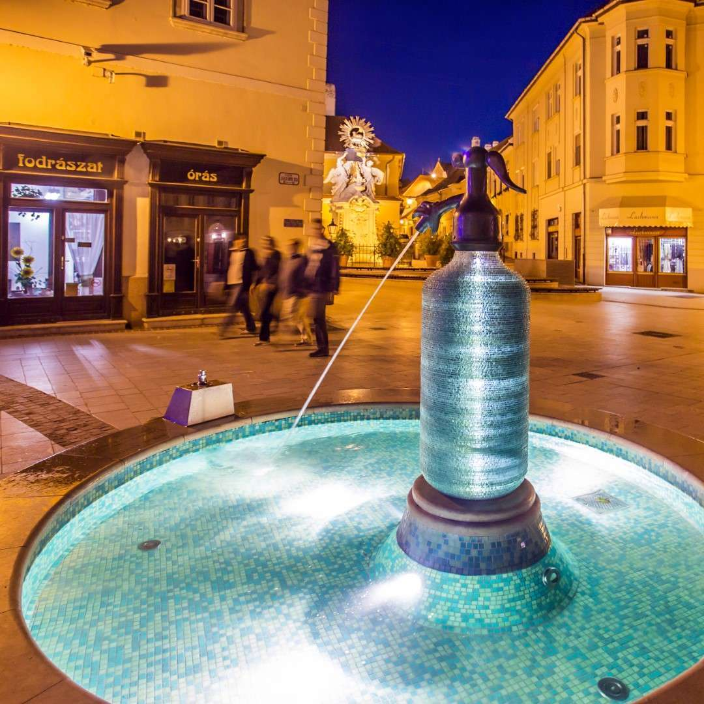
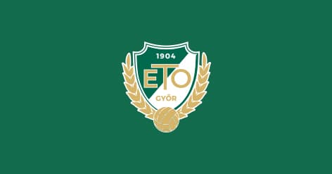

Győr
Top
Győr (US: /djɜːr, dʒɜːr/ DYUR, JUR,[6][7] Hungarian: [ɟøːr] ⓘ; German: Raab; names in other languages) is the main city of northwest Hungary, the capital of Győr-Moson-Sopron County and Western Transdanubia region, and – halfway between Budapest and Vienna – situated on one of the important roads of Central Europe.
It is the sixth largest city in Hungary, and one of its seven main regional centres.
The city has county rights.

History
The area along the Danube River has been inhabited by varying cultures since ancient times.
The first large settlement dates back to the 5th century BCE; the inhabitants were Celts.
They called the town Ara Bona "Good altar", later contracted to Arrabona, a name which was used until the eighth century.
Its shortened form is still used as the German (Raab) and Slovak (Ráb) names of the city.
Roman merchants moved to Arrabona during the 1st century BCE.
Around 10 CE, the Roman army occupied the northern part of Western Hungary, which they called Pannonia.
Although the Roman Empire abandoned the area in the 4th century due to constant attacks by the tribes living to the east, the town remained inhabited.
Around 500 the territory was settled by Slavs, in 547 by the Lombards, and in 568–c.
800 by the Avars, at that time under Frankish and Slavic influence. During this time it was called Rabba and later Raab.
Between 880 and 894, it was part of Great Moravia, and then briefly under East Frankish dominance.
Carmelite church in Győr
Rába at Győr
The Magyars occupied the town around 900 and fortified the abandoned Roman fortress. Stephen I, the first king of Hungary, founded an episcopate there.
The town received its Hungarian name Győr, which likely derives from Old Hungarian personal name Győr, who could be the county's first count.
[8] The town was affected by all the trials and tribulations of the history of Hungary: it was occupied by Mongols during the Mongol invasion (1241–1242) and then was destroyed by the Czech army in 1271.
Transport

The city is a national hub for rail and road traffic.
The transport-geographical position of Győr is excellent.
The most important railway connections are the Vienna-Budapest railway line, but the Győr-Sopron railway line owned by the Győr-Sopron-Ebenfurt railway company, as well as the Győr-Celldömölk railway line and the Győr-Veszprém railway run by MÁV.
In Győr, several main transport routes meet each other (M1, M19, 1, 14, 81, 82, 83, 85), and the motorway is accessible from several parts of the city.
Győr-Pér Airport can be reached from the city on Highway 81, 15 kilometers towards Székesfehérvár.
At the 1734 km section of the Danube lies the port of Győr-Gönyű with its fully equipped 25 hectare serving terminal.
Main Sights
The ancient core of the city is Káptalan Hill at the confluence of three rivers: the Mosoni-Danube, Rába, and Rábca.
Püspökvár, the residence of Győr's bishops, can be easily recognized by its incomplete tower.
Győr's oldest buildings are the 13th-century dwelling tower and the 15th-century Gothic Dóczy Chapel.
The cathedral, originally in Romanesque style, was rebuilt in Gothic and Baroque style.
 Other sights include:
Other sights include:
- Town Hall
- Benedictine church of St. Ignatius of Loyola
- Carmelite church
- Museum of Roman Archaeology
The Pannonhalma Archabbey is located some 20 km (12 miles) outside the town.
Sports
Győr is the home of the Győri ETO Sport Club, which has many sport divisions.
The most popular sport in the city is handball, with the Győri ETO KC being the city's main team.
ETO won the Champions League in 2013, 2014, 2017, 2018 and in 2019 and also reached the final in 2009, 2012 and in 2016.
In addition, Győr reached the final of the EHF Cup Winners' Cup in 2006 and the final of the EHF Cup in 1999, 2002, 2004 and 2005.
WKW ETO FC Győr is a football team, currently (as of 2023/2024) in the Hungarian Second Division.[21]
Source